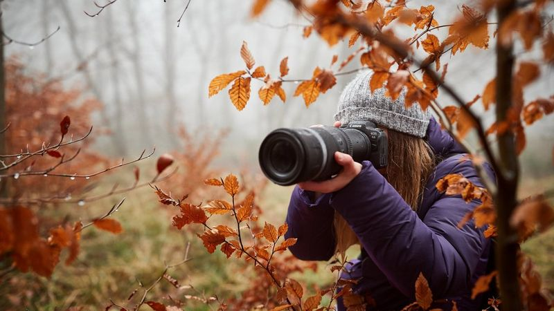

Photos By Cloudd is a small business that specializes in capturing moments that matter most. From weddings and engagements to family portraits and senior photos, we pride ourselves on creating timeless images that will be treasured for years to come. Our skilled team of photographers uses their expertise to tell your story through creative and unique shots, ensuring that every detail is captured with precision and care. At Photos By Cloudd, we believe that every picture should be a work of art, and we work tirelessly to make that a reality for every client.
About Photography
Fine Art Photography
Fine art photography is a genre that aims to capture images that are aesthetically pleasing and thought-provoking. It is a form of visual art that focuses on the creative expression of the photographer rather than the subject matter itself. Fine art photographers use various techniques such as composition, lighting, and post-processing to create a final image that is unique and artistic. Fine art photography is often exhibited in galleries and museums, and its prints are highly sought after by collectors.
Documentary Photography
Documentary photography is a genre that aims to capture real-life events, people, and situations. It is a form of visual storytelling that uses photography as a medium to document social, political, and cultural issues. Documentary photographers often work in photojournalism and use their images to tell stories that inform and educate the public. Documentary photography has a rich history, dating back to the early 20th century, and has been used to capture some of the most significant moments in history.
Commercial Photography
Commercial photography is a genre that is used to promote or sell a product or service. It is a form of visual communication that is often used in advertising, marketing, and public relations. Commercial photographers work with clients to create images that showcase their products or services in the best possible light. They use various techniques such as lighting, composition, and post-processing to create images that are visually appealing and communicate the message of the brand.
Portrait Photography
Portrait photography is a genre that focuses on capturing the essence of a person through their facial expressions, body language, and personality. Portrait photographers work with subjects to create images that are authentic and true to their personality. Portrait photography has been around for centuries, with early portraits often commissioned by wealthy families and royalty. Today, portrait photography is used to capture everything from family portraits to headshots for actors and business professionals.